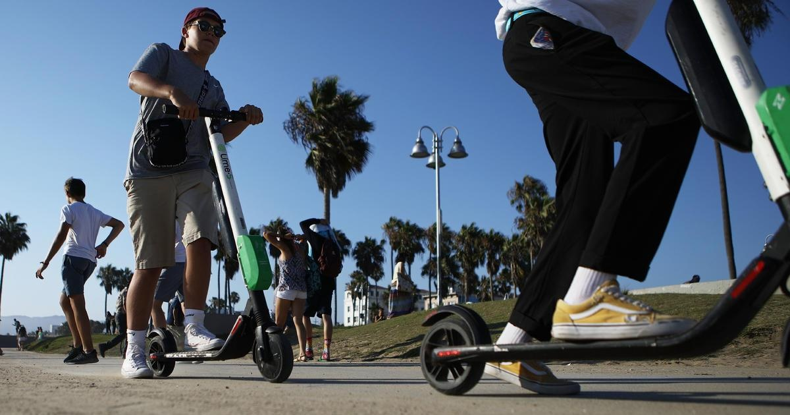

Injuries from e-bikes and e-scooters spiked again last year, CPSC findsAs e-scooters, hoverboards and e-bikes increase in popularity, emergency rooms are seeing a surge in injuries — fractures, contusions, burns and cuts — related to the products, continuing a multiyear trend, the U.S. Consumer Product Safety Commission finds in a report released Tuesday. Injuries related to micromobility devices including e-scooters, e-bikes and hoverboards have risen an estimated 23% each year since 2017, surging nearly 21% last year from 2021, the federal agency said in its report which is based on data collected from U.S. hospitals. There have been at least 233 deaths tied to the products from 2017 through 2022, but the count is likely higher as reporting is "ongoing and incomplete," CPSC said. Hospital emergency departments treated an estimated 360,800 injuries related to the products during that time, according to the report. About 36% of the injuries during the six-year period involved kids 14 years and younger — double their 18% proportion of the overall population, the agency noted. Nearly half, or 46%, of all estimated e-bike injuries from 2017 to 2022 occurred in 2022 alone. Hoverboard injuries, however, declined 26% from 2021 to 2022, according to CPSC. Fires related to the devices are a significant hazard, killing at least 19 people from Jan. 1, 2021, through Nov. 28, 2022, CPSC noted. Not included in that count are four deaths and two serious injuries stemming from an in New York City in June. Fire officials say the blaze rapidly spread to residences above the shop after a lithium-ion battery malfunctioned. Fires from the rechargeable batteries that keep e-bikes, scooters and electric cars running burn hotter and longer than gas, increasing the danger and . That risk prompted Yale University to ban e-scooters from any of its residential properties including undergraduate dormitories just before the start of the fall semester, with the New Haven, Connecticut, institution following a like ban by Columbia University. for more features. |
 |